Project 04
Image Manipulations
|
|
Image: Upload image:
Source Files: main.js image.js curvetool.js colorReduction.js utils.js
Basic Usage
- To choose among a set of images included, use the Image dropdown selector.
- To upload a new image, use the Upload button.
- To compare the result image with the original image, click and hold on the image. The original image will show up when the left mouse button is down, and the result image will show up when the mouse button is up again.
- To restore the original image, click on the reset button.
Curve Tool
The curve tool is implemented using Catmull-Rom curve. It has a simple interface like GIMP:
- To add a control point, simply click on the curve tool;
- To select an existing control point, click it. Currently selected control point is highlighted.
- To move a control point, drag it and move around;
- To delete a control point, select it first and hit backspace or delete key.
- To change the color channel being manipulated, use the Curve dropdown selector.
Examples
Original Image
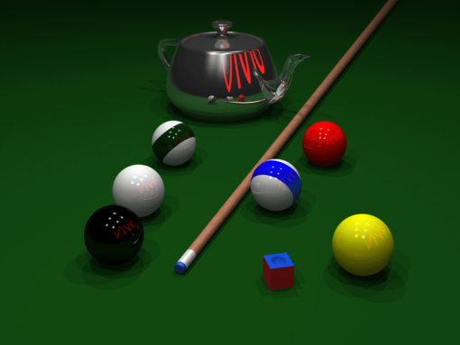
Example 1 Manipulation with a simple curve
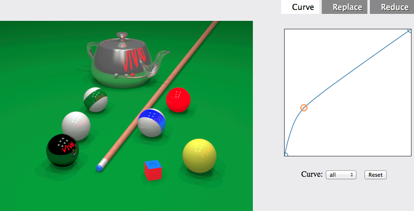
Example 2 Manipulation with a different curve
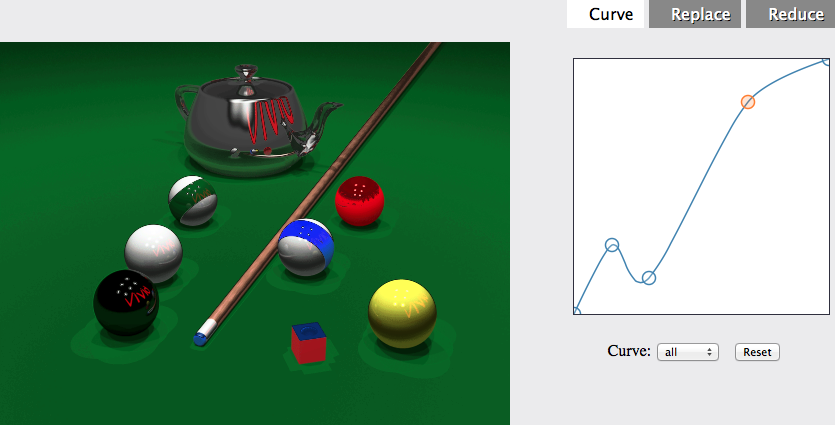
Example 3 Manipulation in the blue channel
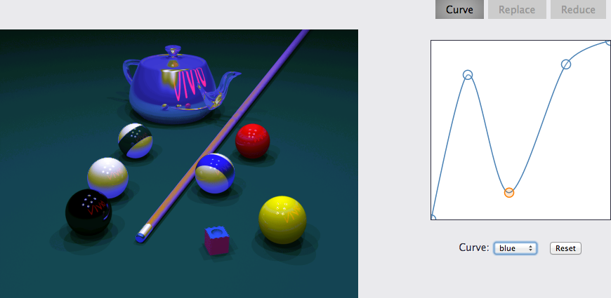
Color Replacement
To perform color replacement, first select a source and a target color by adjusting the sliders of R, G, B values. A tolerance is also needed
to specify the range of color to be replaced.
Switch between source and target color Click on the color patches to switch between source and target color.
Pick a color from the image You can also pick a color in the image by holding the SHIFT key and moving your mouse over the image.
Two modes of color replacement are supported, RGB mode and HSV mode.
- For RGB mode, the distance to the source color is computed for every pixel. Pixels with a distance smaller than the specified threshold are replaced with the target color.
- For HSV mode, a pixel is first converted to HSV color space, as with both the source color and target color. The distance of a pixel's color to the source color is measured as the absolute difference between their hue value. If the distance is smaller than the threshold, the pixel's hue is replaced with the hue of the target color.
Examples
Original Image 1
Example 1a Color replacement in the RGB space
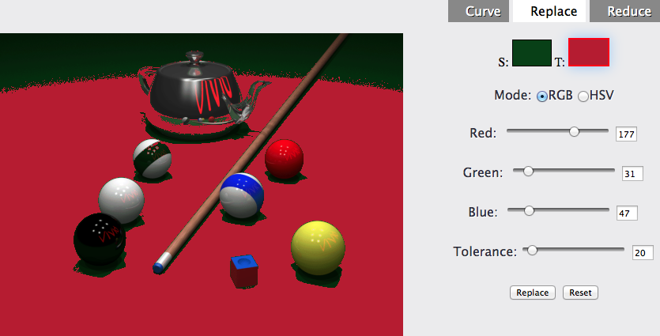
Example 1a Color replacement in the HSV space
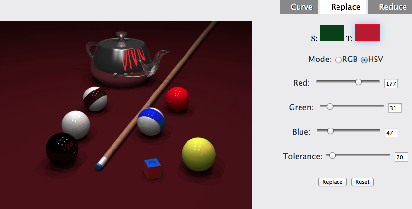
Original Image 2
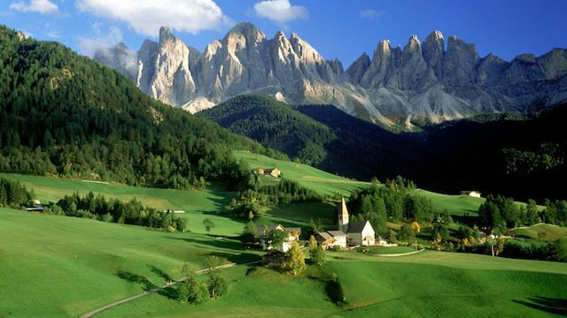
Example 2a Color replacement in the RGB space
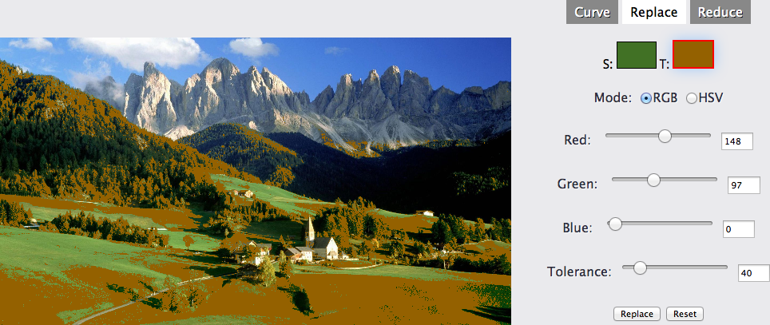
Example 2b Color replacement in the HSV space
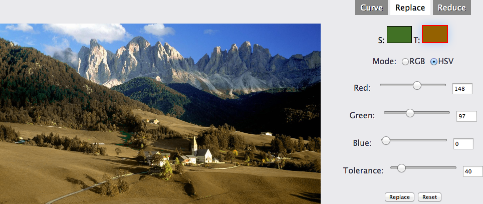
Color Reduction
Four algorithms for color reduction are implemented: uniform palette, population based reduction, median-cut algorithm, k-means clustering reduction and neural network.
Original Image used in the following examples
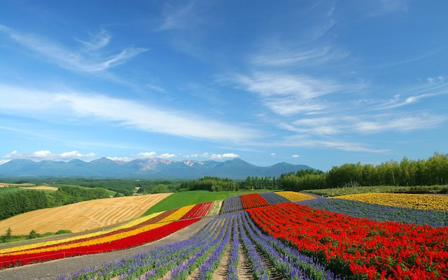
Uniform palette is a straight-forward discretization of the RGB space by replacing each channel with a fixed number (less than 256) of levels.
Reduction with 8 colors
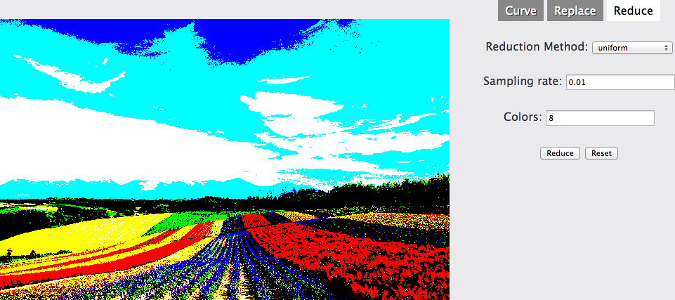
Reduction with 64 colors
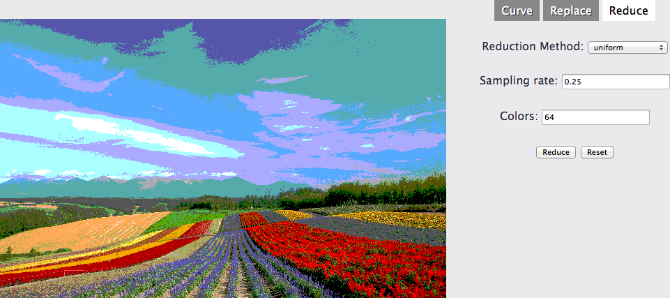
Population based reduction is a reduction method utilizing the distribution of the colors in an image. A 3D histogram is built using pixels in the image, and only the first n most filled bins are selected. The color map is then built using the center colors of the chosen bins.
Reduction with 8 colors
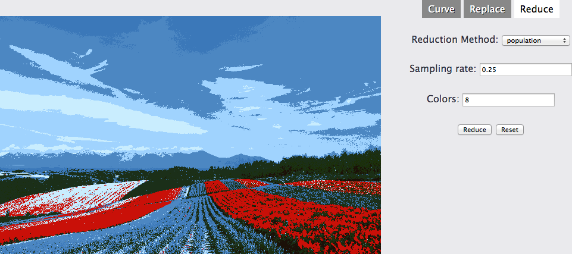
Reduction with 64 colors
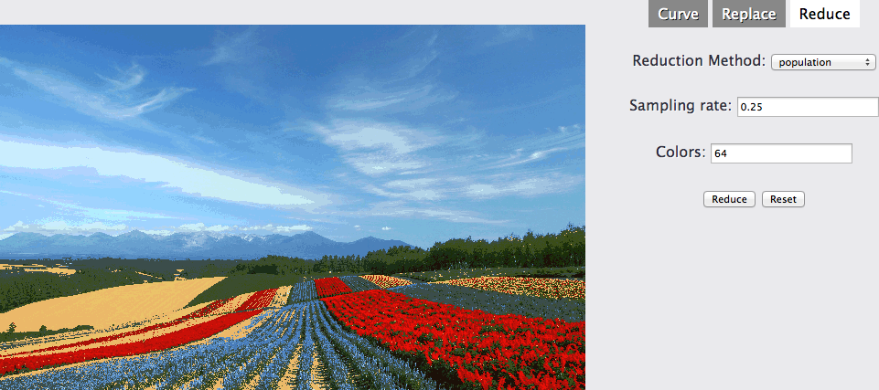
Median-Cut color reduction is achieved by recursively dividing the color space into two parts and build a color map with the center color of each color subspace. Please refer to Paul Heckbert's paper for details.
Reduction with 8 colors

Reduction with 64 colors
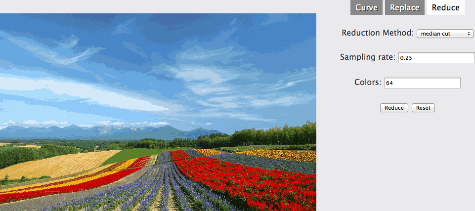
K-means clustering color reduction is achieved by clustering the pixels in the input image into k groups and generate a color map using the mean colors of each group. Please refer to Tomáš Mikolov's paper for details.
Reduction with 8 colors
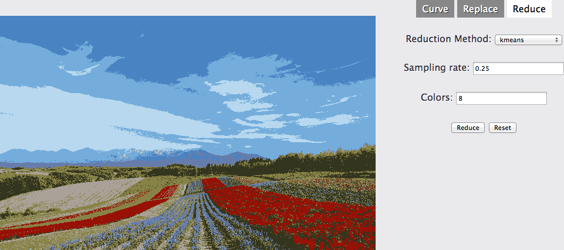
Reduction with 64 colors
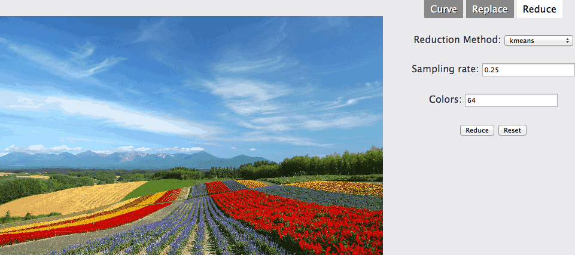
Neural network color reduction is a reduction method that constructs the color mapping by adapting an initial color map to minimize the reduction error. This algorithm is a simplified implementation based on Anthony H. Dekker's paper.
Reduction with 8 colors
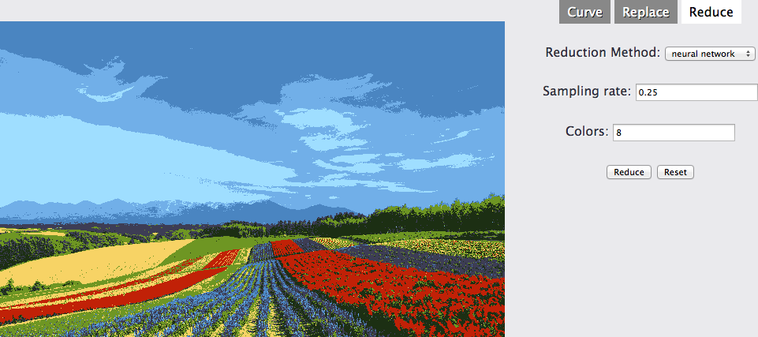
Reduction with 64 colors